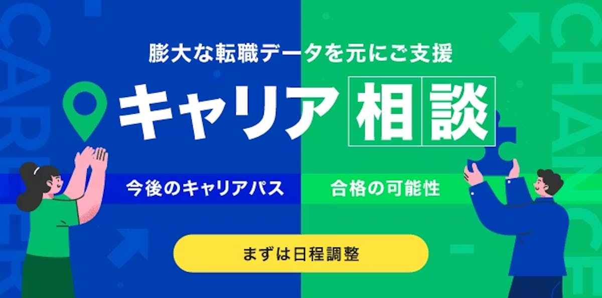
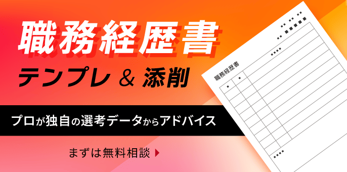

ワンキャリア転職（旧 ONE CAREER PLUS）は、求人票では分からない選考体験談・キャリアパス・年収変化で企業研究できる転職サービスです。結論：AI・IT転職の企業研究〜面接対策なら、転職時期未定でも無料登録だけ先に使う価値あり。向き不向き・競合比較・登録手順を2026年6月時点で整理します。
向いている人・向いていない人
| 向いている人 | 向いていない人 |
|---|---|
| 面接で何を聞かれるかを先に知りたい | 求人数の絶対数だけ最大化したい |
| キャリアパス（例：マーケ→データ職）を参考にしたい | 40代以降のハイクラス専門エージェントだけで十分 |
| 転職時期未定でも情報収集だけしたい | 海外転職が唯一の目的（LinkedIn中心） |
| AI未経験・第二新卒で企業研究中 | AI特化スカウト1本に絞りたい |
当てはまれば無料登録して志望企業の体験談を1社分読むのが最初の一歩です。
ワンキャリア転職とは
ワンキャリア転職は、就活「ワンキャリア」のデータを転職向けに展開したサービス（2021年開始、2026年4月に現名称へ）。plus.onecareer.jp で、転職者投稿の体験談・選考情報・年収を閲覧できます。20〜30代のキャリアチェンジ向けが中心で、未経験可の体験談もあります。
よくある誤解は2つ。①求人サイトだけと思うこと——強みは体験談・面接内容の一次情報（求人数は総合サイトに劣る場合あり）。②登録＝転職迫られる——面談・エージェント支援は任意で、情報収集のみも可。
主な機能
選考体験談
面接で聞かれた質問・選考期間。AI企業の技術面接の傾向把握に有用。
キャリアパス
前後の職種・年収がつながって見える。未経験からAI職へ移ったルートの参考に。
年収・クチコミ
転職前後の年収変化。年収トレンドと併せて確認。
キャリア面談
無料のオンライン面談（任意）。非公開求人の紹介を受けられる場合あり。
体験談3万件超・キャリアパス8,000件超（2026年6月時点・公式案内）。最新数値は公式で確認してください。

他サービスとの比較
| サービス | 料金 | 強み | AI転職での役割 |
|---|---|---|---|
| ワンキャリア転職 | 無料（2026年6月時点） | 選考体験談・キャリアパス・面接質問 | 企業研究・面接対策の一次情報（本記事のおすすめ用途） |
| OpenWork 等 | 無料〜 | 社内の働き方・年収クチコミ | 入社後の環境・残業・評価制度の確認 |
| 無料〜 | ネットワーク・直接応募・スカウト | 海外・グローバル企業、プロフィール公開 | |
| 大手転職エージェント | 無料（成功報酬） | 求人の幅・書類添削・条件交渉 | 応募数を増やし、選考プロセスを代行 |
使い分け：①ワンキャリア転職（面接・ルート）→ ②OpenWork（入社後）→ ③エージェント or LinkedIn（応募）。
AI転職での活用法
学習・資格と並行する流れの目安です。詳細は学習ロードマップ・ポートフォリオも参照。
フェーズ2：選考対策（3〜6か月前）
- 志望企業の体験談を1社分 面接質問をメモし、志望動機・ポートフォリオに反映
フェーズ3：応募（直前期）
- （任意）面談・未経験枠を確認 キャリア面談や第二新卒ガイドと併用
無料登録の流れ
まずはステップ1〜2だけでOK。転職時期未定でも体験談の情報収集から始められます。
- 無料会員登録（約3分） メール等で登録。詳細プロフィールは後からで可。
- 志望企業の体験談を1社読む 「AI」「未経験可」等で絞り、面接質問をメモ。
- （任意）面談・口コミ投稿 企業が絞れたら面談。一部記事は口コミ投稿後に閲覧可。

メリット・デメリット
| メリット | デメリット |
|---|---|
| 面接で聞かれた質問など選考対策に直結する情報 | 求人数は大手総合サイトより少ない場合がある |
| キャリアパスで「前職→AI職」のルートが見える | ハイクラス・20〜30代向け情報が目立ち、全年代向けではない |
| 登録・閲覧は無料（2026年6月時点） | 一部閲覧に口コミ投稿が必要な場合あり |
| 情報収集のみの利用も可能 | AI特化サービスではない |
よくある質問
ワンキャリア転職は無料で使えますか？
会員登録・体験談閲覧・キャリア面談の申し込みは無料です（2026年6月時点）。一部コンテンツは口コミ投稿後に閲覧できる場合があります。最新条件は公式サイトで確認してください。
ONE CAREER PLUSとワンキャリア転職は同じ？
同じサービスです。2026年4月に名称が「ワンキャリア転職」に変更されました。URLやログイン方法は従来どおりです。
AI未経験でも使える？
使えます。未経験可求人や、異業種からデータ・IT職へ移った体験談を参考に企業研究できます。ただし未経験枠は競争が激しいため、資格・ポートフォリオの準備は並行して進めてください。
転職時期が未定でも登録すべき？
企業研究段階なら、無料登録して体験談を読んでおく価値があります。面接傾向の把握や、G検定・ポートフォリオの優先順位づけにも役立ちます。
OpenWorkとの使い分けは？
OpenWorkは入社後の評判、ワンキャリア転職は選考・キャリアパスが中心。「入るまで」と「入社後」を両方見るのが効率的です。